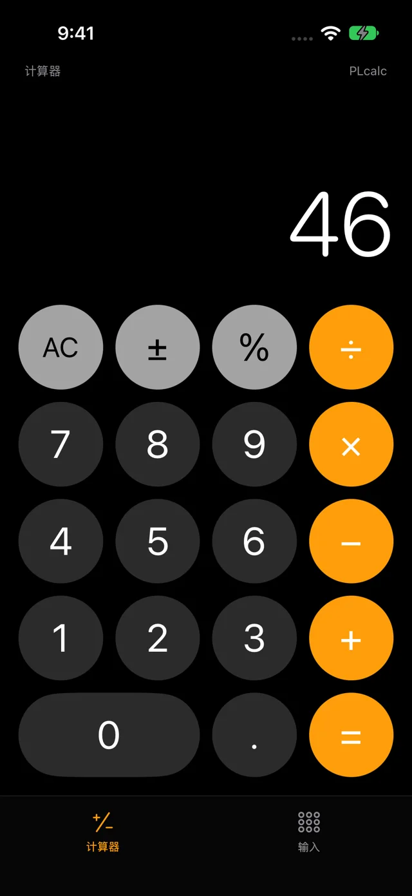
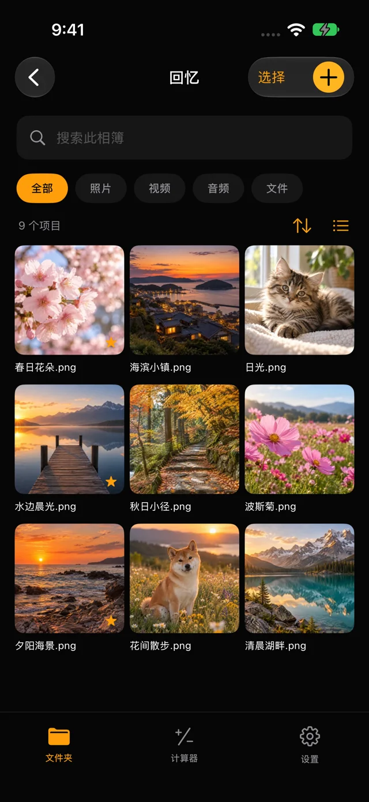
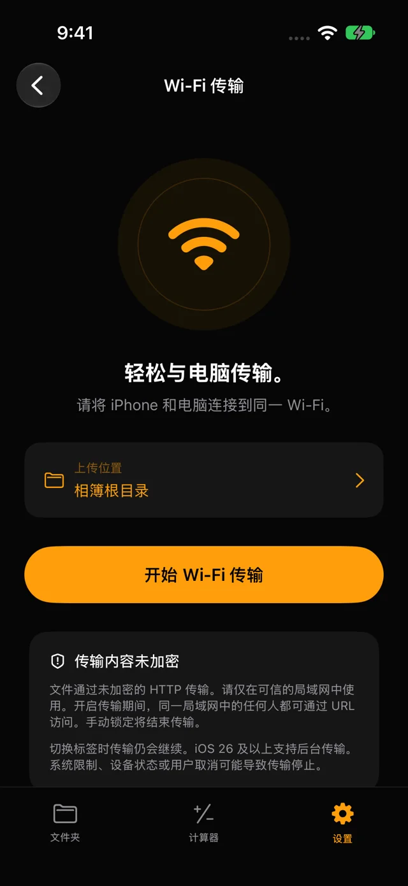

在设备内加密保存
文件内容和文件夹名称均加密保存。可使用 4 位数 PIN 或 8 至 64 个字符的密码。
iPhone & iPad · plcalc
在 iPhone 或 iPad 上加密保存照片、视频和文件。使用 PIN 或密码打开相册，无需注册账号。
在 App Store 查看iOS 17+ · iPadOS 17+


PHOTO LOCK CALCULATOR
文件内容和文件夹名称均加密保存。可使用 4 位数 PIN 或 8 至 64 个字符的密码。
通过多级文件夹整理照片、视频、音频和文档。支持搜索、收藏及从废纸篓恢复。
连接同一个 Wi-Fi，在电脑浏览器中打开 App 显示的网址。选择目标文件夹后即可上传文件。

忘记的 PIN 或密码无法恢复。重要文件请单独备份。存储容量取决于设备的可用空间。
Wi-Fi 传输使用未加密的 HTTP。请仅在可信任的网络中使用；传输开启期间，同一局域网的设备可访问共享相册。后台传输可能因系统限制而中断。
支持 ↗